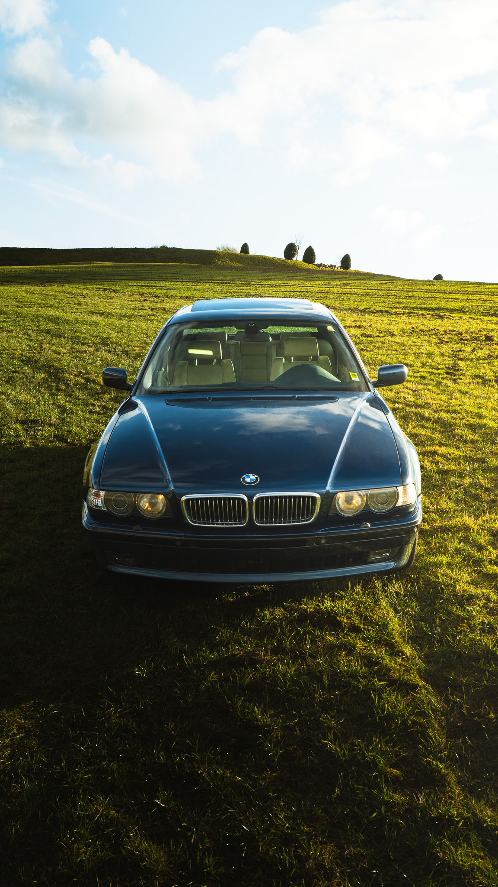

Auto Shootings auf dem nächsten Level.
Dynamik, Details und pure Kreativität. Aus dem Sucher, direkt auf deinen Screen.




Was Kunden sagen.
Echte Meinungen nach dem Shooting.
"Hasan hat ein unfassbares Auge für Linien und Licht. Mein C-Coupe sah noch nie so brutal aus. Absolut professionell und die Bilder kamen extrem schnell!"
"Die Atmosphäre beim Shooting war total entspannt. Er weiß genau, wie er die Dynamik auf der Straße einfängt."
"Von der Location-Suche bis zum fertigen Color Grading absolut top. Man merkt einfach die Leidenschaft für Autos in jedem einzelnen Detail."
Die Ästhetik der Nachbearbeitung
Ein Foto direkt aus der Kamera ist für mich nur das Rohmaterial. Durch präzises Color Grading, gezieltes Dodge & Burn und die Akzentuierung von Lichtkanten verleihe ich jedem Fahrzeug eine visuelle Tiefe, die über die Realität hinausgeht.
Dynamik
Ich fange den perfekten Winkel deines Autos ein. Kein langweiliges Parken, sondern pure Energie auf der Straße.
Details
Jede Kurve, jede Naht im Interieur, jede Felge in Perfektion ausgeleuchtet, Kratzer entfernt und in Szene gesetzt.
Kreativität
Dein Auto in Locations, die den Charakter deines Fahrzeugs unterstreichen und herausstechen.

Hasan 👋
Der Typ hinter der Kamera aus Marburg-Biedenkopf. Wirtschaftsinformatik-Student mit einer obsessiven Leidenschaft für Automobilfotografie & Visual Arts. Ich lasse Bilder sprechen.
Bereit für dein eigenes Shooting?
Lass uns besprechen, wie wir dein Fahrzeug perfekt einfangen.
Schreibe mir eine Nachricht